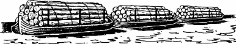

340
You are woken at daybreak by the rattling sound of heavy chains and the mechanical thumping and buzzing of a steam-driven sawmill. The fearful noise is almost deafening, yet it fails to awaken Karvas who is sleeping deeply after yesterday’s tiring trek. You let him sleep on for another hour before you are forced to awaken him. A trio of rugged timber workers have arrived in an ox-drawn wagon to collect logs for transportation to the river barges. Unfortunately, they have decided to take the logs behind which you are hiding. As they busy themselves fixing hooks and chains, you and Karvas slip aboard their wagon and cover yourselves with a tarpaulin. Once the loading is complete, the men take their seats at the front of the wagon and set off for the river.
{kind=link}

Through a rent in the oily canvas sheet you watch the drab houses and streets of Bakhasa filing past. The wagon slows as it approaches the city’s main bridge, and then it comes to an unexpected halt. A black-clad guardsman appears and you hear him say to the driver that he wants to inspect his cargo. The driver argues with the guard, insisting that he be allowed to continue on his way. Fearing that you may be detected if the guard prevails, you and Karvas slip away from the wagon and hurry into the ruins of a warehouse close by.
From the cover of this derelict warehouse you watch the soldiers and citizens of Bakhasa going about their daily business. Only twenty days remain before Harvestmas, and as the hours tick by, you become uncomfortably aware that time is running out. With 1,200 miles yet to cover, you know that the success or failure of your mission now hinges on your being able to find some sturdy horses. Throughout the long day you observe the traffic of people who are using the surrounding streets, yet rarely do you see any on horseback.
On the north side of the warehouse there stands a domed building with an adjoining bell-tower. As dusk approaches, you propose to Karvas that you should try to reach the top of this tower. Using your keen sight you will get a better view of the city from there and, with luck, you may be able to locate the nearest stables. The Prince agrees to your plan. He will remain here in the warehouse while you attempt to gain access to the bell-tower. Night is closing and, as you wait for the streets to empty, you study the building opposite and determine two ways by which you may enter its tower: by a side door at street level, or by an open window in the second storey of the tower.
If you wish to try to enter the building by the side door, turn to 154.
If you choose instead to attempt to climb the tower wall and enter through the open window, turn to 271.